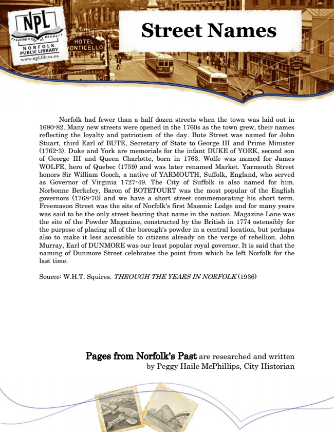

Street Names
Norfolk had fewer than a half dozen streets when the town was laid out in 1680-82. Many new streets were opened in the 1760s as the town grew, their names reflecting the loyalty and patriotism of the day. Bute Street was named for John Stuart, third Earl of BUTE, Secretary of State to George III and Prime Minister (1762-3). Duke and York are memorials for the infant DUKE of YORK, second son of George III and Queen Charlotte, born in 1763. Wolfe was named for James WOLFE, hero of Quebec (1759) and was later renamed Market. Yarmouth Street honors Sir William Gooch, a native of YARMOUTH, Suffolk, England, who served as Governor of Virginia 1727-49. The City of Suffolk is also named for him. Norbonne Berkeley, Baron of BOTETOURT was the most popular of the English governors (1768-70) and we have a short street commemorating his short term. Freemason Street was the site of Norfolk's first Masonic Lodge and for many years was said to be the only street bearing that name in the nation. Magazine Lane was the site of the Powder Magazine, constructed by the British in 1774 ostensibly for the purpose of placing all of the borough's powder in a central location, but perhaps also to make it less accessible to citizens already on the verge of rebellion. John Murray, Earl of DUNMORE was our least popular royal governor. It is said that the naming of Dunmore Street celebrates the point from which he left Norfolk for the last time.
Source: W.H.T. Squires. THROUGH THE YEARS IN NORFOLK (1936)
Pages from Norfolk's Past are researched and written by Peggy Haile McPhillips, City Historian